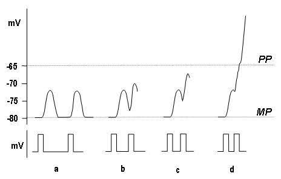
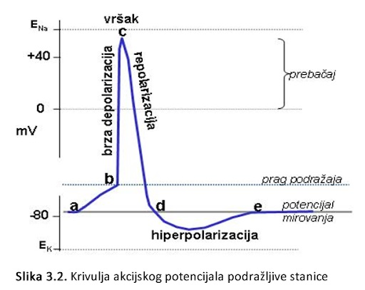
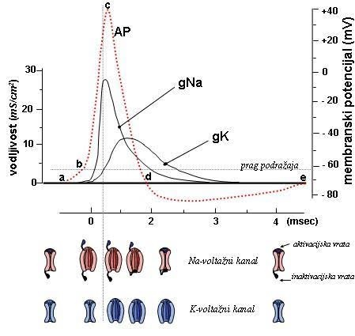
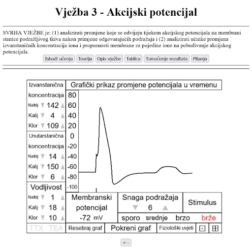

SVRHA VJEŽBE: uz pomoć interaktivnog simulacijskog programa PROSIG (1) analizirati promjene koje se odvijaju tijekom generiranja akcijskog potencijala na membrani stanica podražljivog tkiva nakon primjene odgovarajućih podražaja i (2) analizirati učinke promjena izvanstaničnih koncentracija iona i propusnosti membrane za pojedine ione na generiranje akcijskog potencijala.
PURPOSE OF THE EXERCISE: using the interactive simulation program PROSIG, (1) to analyse the changes that take place during the generation of an action potential on the membrane of excitable cells after appropriate stimuli, and (2) to analyse the effects of changes in extracellular ion concentrations and membrane permeability to individual ions on the generation of the action potential.
Akcijski potencijal nastaje samo ako podražaj depolarizira membranu do praga (≈ −50 mV); slabiji podražaj daje samo lokalni odgovor. Kad nastane, uvijek je iste veličine — „sve ili ništa“.
An action potential arises only if the stimulus depolarises the membrane to threshold (≈ −50 mV); a weaker stimulus gives only a local response. Once it fires it is always the same size — "all or none".
Depolarisation = rapid opening of Na channels (Na⁺ enters); repolarisation = inactivation of Na channels + slow opening of K channels (K⁺ leaves); hyperpolarisation = K channels still open.
Hyperkalaemia depolarises the membrane and inactivates Na channels → smaller AP; TTX blocks Na channels (no AP), TEA blocks K channels (no repolarisation).
Nakon obrade ove vježbe moći ćete:
definirati pojam podražljivost i predvidjeti prirodu odgovora podražljivih stanica na električni podražaj
razlikovati subminimalni od minimalnog podražaja te objasniti pojam prag podražaja
opisati akcijski potencijal na staničnoj membrani i njegove faze
objasniti kako se tijekom akcijskog potencijala mijenjaju vodljivosti ionskih kanala za K⁺ i Na⁺ te opisati kakve se promjene pritom događaju u ionskim kanalima
objasniti molekularne mehanizme koji leže u pozadini inaktivacije natrijskih voltažnih kanala
objasniti kako promjene izvanstanične koncentracije iona i promjene vodljivosti za pojedine ione utječu na nastanak akcijskog potencijala
imenovati nekoliko toksina i blokatora o voltaži ovisnih K-kanala i Na-kanala te znati opisati koje su posljedice njihova djelovanja
TEORIJSKI DIO. U prethodnoj ste vježbi naučili da membranski potencijal mirovanja predstavlja ravnotežu ravnotežnih potencijala svakog iona za koje je membrana propusna. Pri ovom potencijalu nema neto kretanja iona kroz membranu zbog čega kažemo da se membrana nalazi u postojanom (ravnotežnom) stanju. Membranski potencijal mirovanja je približno jednak ravnotežnom potencijalu klora, zbog čega na Cl⁻ ne djeluje nikakva neto-sila i nema neto toka Cl⁻ kroz membranu. Međutim, potencijal membrane u mirovanju nije jednak ravnotežnim potencijalima natrija i kalija, zbog čega se onda razlika između membranskog potencijala mirovanja i ravnotežnih potencijala za Na⁺ i K⁺ može smatrati pokretačkom silom za Na⁺ i K⁺. Pokretačka sila za natrij tjera Na⁺ u stanicu s ciljem postizanja ravnotežnog potencijala za Na⁺, dok pokretačka sila za kalij tjera K⁺ iz stanice s ciljem postizanja ravnotežnog potencijala za K⁺. Iz ovog proizlazi da je pri istoj propusnosti membrane kretanje iona kroz membranu veće u onih iona čija je pokretačka sila veća. Stoga, svaka promjena propusnosti membrane za Na⁺ i K⁺ rezultira promjenom potencijala membrane. Do promjene propusnosti membrane može doći uslijed primjene nekog podražaja (kemijskog, mehaničkog, toplinskog ili električnog). Ukoliko se primijeni dovoljno jaki podražaj moguće je u „podražljivim“ tkivima pobuditi akcijski potencijal.
Akcijski potencijal (impuls, val depolarizacije) je kratkotrajni prolazni obrat membranskog potencijala koji se širi uzduž membrane podražljivih tkiva. Podražljiva tkiva su ona koja imaju sposobnost da na primjenu podražaja reagiraju akcijskim potencijalom. Takva svojstva posjeduju živčana i mišićna vlakna. Do prolaznih promjena potencijala membrane tijekom akcijskog potencijala dolazi uslijed prolaznog otvaranja (aktivacije) i zatvaranja (deaktivacije) aktivnih ionskih kanala. Važno je naglasiti da akcijski potencijal nastaje samo ako je primijenjeni podražaj dovoljno jak da potencijal membrane promijeni do razine koja se naziva prag podražaja ili pražni potencijal. Takav se podražaj naziva minimalni podražaj. Podražaji koji su od ovoga slabiji nazivaju se subminimalni podražaji i oni ne mogu pobuditi nastanak akcijskog potencijala. Podražaji jači od minimalnog podražaja nazivaju se supraminimalni podražaji. Primjenom minimalnog podražaja amplituda pobuđenog akcijskog potencijala postiže svoju maksimalnu vrijednost (Slika 3.1.). Stoga amplituda akcijskog potencijala nakon primjene podražaja jačih od minimalnog nije veća od one koju nalazimo nakon primjene minimalnog podražaja. Razlog ovome je što pri pražnom potencijalu membrane dolazi unutar Na-voltažnih kanala do konformacijskih promjena koje rezultiraju potpunim otvaranjem kanala. Dakle, akcijski potencijal se ili pojavi (primjena minimalnih ili supraminimalnih podražaja) ili ne pojavi (primjena subminimalnih podražaja). Zbog ovog svojstva kažemo da se pobuđivanje akcijskog potencijala odvija prema principu „sve ili ništa“.

Slika 3.1. Sumacija subminimalnih podražaja pobuđuje nastanak akcijskog potencijala. PP je prag podražaja, a MP predstavlja membranski potencijal. a) drugi je podražaj primijenjen nakon što je lokalna reakcija iščezla, zbog čega je druga promjena potencijala identična prvoj. b) drugi je podražaj primijenjen pri kraju iščezavanja prve lokalne reakcije, zbog čega druga promjena potencijala postaje nešto veća od prve. c) drugi je podražaj primijenjen još dok prva lokalna reakcija nije iščezla; sumacija je nedovoljna za postizanje praga podražaja. d) drugi je podražaj primijenjen dok prva lokalna reakcija dosiže svoj vršak; sumacija ima za posljedicu dosizanje pražnog potencijala i izbijanje akcijskog potencijala.
U akcijskom potencijalu razlikujemo četiri faze (Slika 3.2):
Razdoblje depolarizacije membrane (krivulja a-c) čini početnu fazu u nastanku akcijskog potencijala. Nastaje ulaskom Na⁺ u stanicu kroz Na-voltažne kanale. Razlikujemo dvije faze: prvu čini spora depolarizacija (krivulja a-b) u kojoj se potencijal mijenja od membranskog potencijala mirovanja do praga podražaja. Do ove promjene potencijala dolazi uslijed spore aktivacije Na-voltažnih kanala. Dosizanjem pražnog potencijala započinje druga faza ili brza depolarizacija (krivulja b-c) koja nastaje uslijed aktivacije Na-voltažnih kanala. Dolazi do brzog, nezaustavljivog i potpunog otvaranja Na-voltažnih kanala (princip „sve ili ništa“), uslijed čega Na⁺ naglo utječe u stanicu i pomiče potencijal membrane prema ravnotežnom potencijalu za Na (ENa). Tijekom ove faze dolazi do obrata razlike potencijala kroz membranu, tako da kratkotrajno unutrašnjost stanice postaje pozitivnija u odnosu na vanjski dio. Osim Na-voltažnih kanala tijekom ove faze dolazi i do otvaranja K-voltažnih kanala, međutim ovo se otvaranje odvija znatno sporije. Važno je napomenuti da Na-voltažni kanali relativno brzo podliježu o vremenu ovisnoj, a voltaži neovisnoj sporoj inaktivaciji. Posljedica je ove inaktivacije da Na-voltažni kanali postaju neprohodni za Na⁺ usprkos prisutnoj depolarizaciji membrane.

Slika 3.2. Faze akcijskog potencijala.
Vršak akcijskog potencijala (točka c) je najviša vrijednost koju potencijal membrane stanice postigne tijekom akcijskog potencijala. Rezultat je odnosa između ulaska Na⁺ i izlaska K⁺ kroz njihove voltažne kanale. Karakterizira ga zatvaranje inaktivacijskih vrata većeg broja Na-voltažnih kanala, tako da struja izlaska iona K⁺ iz stanice nadvlada struju ulaska iona Na⁺ u stanicu.
Razdoblje repolarizacije membrane (krivulja c-d) je faza akcijskog potencijala u kojem se potencijal membrane vraća prema potencijalu u mirovanju. Repolarizacija započinje obratom u veličini protoka Na⁺ i K⁺ kroz voltažne kanale. Uslijed sve većeg broja inaktiviranih Na-voltažnih kanala i istodobnog otvaranja sve većeg broja K-voltažnih kanala, utok Na⁺ u stanicu biva nadvladan istjecanjem K⁺ iz stanice. Više pozitivnih naboja izlazi iz stanice no što ih u stanicu ulazi zbog čega se potencijal membrane vraća prema vrijednosti koju ima u mirovanju. Što je potencijal membrane bliži onom kojeg ima u mirovanju sve je veći broj Na-voltažnih kanala koji iz inaktiviranog prelaze u deaktivirano stanje i kao takvi postaju podložni ponovnoj aktivaciji.
Razdoblje hiperpolarizacije membrane (krivulja d-e) je prolazno kratkotrajno razdoblje u kojem potencijal membrane postaje neznatno niži od onog koji u membrani postoji tijekom mirovanja. Do hiperpolarizacije dolazi uslijed produžene otvorenosti K-voltažnih kanala što omogućuje izlazak većeg broja K⁺ iz stanice. Nakon zatvaranja K-voltažnih kanala potencijal membrane se uz pomoć djelovanja aktivne Na/K crpke i kretanja iona kroz pasivne ionske kanale postepeno vraća na vrijednost koju ima u mirovanju.
Promjene stanja voltažnih kanala tijekom generiranja akcijskog potencijala. Promjene potencijala membrane tijekom akcijskog potencijala posljedica su pasivnog prolaza Na⁺ i K⁺ kroz aktivne kanale. Stanje aktivacije (otvorenosti) i deaktivacije (zatvorenosti) Na-voltažnih i K-voltažnih kanala glavni je regulator vodljivosti membrane za ione. Između ovih kanala postoji značajna razlika u strukturi što se može zaključiti i prema načinu na koji provode ione. Naime, depolarizacija membrane uzrokuje sporu aktivaciju K-voltažnih kanala koji kad se jednom aktiviraju ostaju tako aktivnim cijelo vrijeme trajanja depolarizacije. Do deaktivacije kanala dolazi postepeno tijekom završnog dijela repolarizacije kad se kanal prevodi u svoje mirujuće (zatvoreno) stanje. S druge strane, depolarizacija uzrokuje znatno bržu aktivaciju Na-voltažnih kanala pri čemu ona postaje gotovo trenutna nakon dosizanja pražnog potencijala (zakon „sve ili ništa“), međutim ubrzo nakon započete aktivacije, i pored održane depolarizacije, Na-kanali postaju nepropusni za prolaz Na⁺. Ovo se naziva stanje inaktiviranosti Na-voltažnih kanala. Do deaktivacije Na-kanala, odnosno vraćanja u mirujuće (zatvoreno) stanje dolazi tijekom završnog dijela repolarizacije kad se potencijal približi membranskom potencijalu mirovanja.
Iz opisanog proizlazi da K-voltažni kanali prolaze kroz dvije faze: fazu aktivacije i deaktivacije, dok Na-voltažni kanali prolaze kroz tri faze: fazu aktivacije, inaktivacije i deaktivacije. K-voltažni kanali posjeduju jedna o voltaži osjetljiva „vrata“ koja se otvaraju depolarizacijom (aktivacija kanala) i zatvaraju repolarizacijom (deaktivacija kanala), dok Na-kanali posjeduju dvoja „vrata“. Jedna su „vrata“ o voltaži ovisna i otvaraju se depolarizacijom (aktivacija kanala), a zatvaraju repolarizacijom (deaktivacija kanala). Druga su „vrata“ o voltaži neovisna ali o vremenu ovisna i ona se, čak i pored održane depolarizacije, zatvaraju (inaktivacija kanala) vrlo brzo nakon aktivacije kanala. Dok su prva vrata nazvana „aktivacijskim“, druga su dobila naziv „inaktivacijska vrata“. I jedna i druga vrata se tijekom završnog dijela repolarizacije vraćaju u svoje početno stanje (Slika 3.3).

Slika 3.3. Nastanak akcijskog potencijala je povezan s promjenom vodljivosti membrane za natrij i kalij koje su posljedica regulacije otvaranja i zatvaranja voltažnih kanala. Prije izbijanja akcijskog potencijala K-kanali su zatvoreni, dok su u Na-kanalima aktivacijska vrata zatvorena, a inaktivacijska otvorena. Tijekom spore depolarizacije (razdoblje a-b) dolazi do sporog otvaranja Na-kanala. Dosizanjem pražnog potencijala (točka b) dolazi do brzog otvaranja aktivacijskih i sporog zatvaranja inaktivacijskih vrata, pa Na⁺ brzo utječe u stanicu. U točki c akcijski potencijal dosiže najveću vrijednost. Inaktivacija Na-kanala i otvaranje K-kanala rezultira repolarizacijom (razdoblje c-d). Zbog produžene otvorenosti K-kanala dolazi do hiperpolarizacije membrane (razdoblje d-e). AP je kratica za akcijski potencijal, gNa za vodljivost za Na⁺, a gK za vodljivost za K⁺.
IZVOĐENJE VJEŽBE. Za izvođenje vježbe koristi se treći od četiri modula simulacijskog programa „PROSIG“. Treći modul namijenjen je za učenje osnova akcijskog potencijala.
Interaktivni dio programa čine četiri promjenjive varijable. Na lijevoj strani radnog sučelja nalaze se: koncentracije iona Na⁺, K⁺ i Cl⁻ (izražene u mmol/L) u izvanstaničnom prostoru, vodljivost stanične membrane za ione Na⁺, K⁺ i Cl⁻ i blokatori naponskih kanala — TTX (tetrodotoksin koji blokira natrijske voltažne kanale) i TEA (tetraetilamonij koji blokira kalijske voltažne kanale) — te Snaga podražaja. Blokatori voltažnih kanala aktiviraju se klikom na kratice njihovih naziva (aktivirani TTX obojen je plavo, TEA crveno). Kretanje iona kroz staničnu membranu odvija se na tjelesnoj temperaturi (37 °C).
Prezentacijski dio programa obuhvaća grafički prikaz promjena potencijala membrane u ovisnosti o vremenu. Iznad grafa prikazuje se trenutačna vrijednost membranskog potencijala te — nakon svakog podražaja — automatski izmjereni vršak akcijskog potencijala i najniža vrijednost hiperpolarizacije. Iscrtavanje krivulje može se usporiti i ubrzati gumbima „sporo“, „srednje“, „brzo“ i „brže“. Klikom na gumb Stimulus membrana se podraži električnim podražajem postavljene snage; trenutak podražaja označen je na grafu. Gumbi Pauziraj graf, Resetiraj graf i Fiziološki uvjeti upravljaju simulacijom.

Slika 3.4. Sučelje izvorne verzije vježbe za simulaciju akcijskog potencijala.
POSTUPAK IZVOĐENJA VJEŽBE
Prije početka izvođenja vježbe studenti trebaju proučiti očekivane Ishode učenja za treći modul, pripremiti gradivo na stranici Teorija te se upoznati s načinom izvođenja vježbe. Predviđeno je da studenti nakon promjene pojedinih varijabli u Tablicu 3.1 najprije upišu svoja očekivanja o tome kako će promijenjene varijable utjecati na generiranje akcijskog potencijala te na razinu membranskog potencijala, a zatim pokretanjem simulacije provjere jesu li ispravno predvidjeli smjer i približnu veličinu promjene.
simulaciju započinjete postavljanjem svih promjenjivih varijabli u njihovo početno stanje klikom na gumb Fiziološki uvjeti;
promijenite vrijednosti odgovarajućih varijabli prema postavkama u Tablici 3.1 (ili kliknite ▶ Postavi u retku tablice);
graf se iscrtava kontinuirano; brojčana vrijednost potencijala prikazuje se iznad grafa;
postavite vrijednost snage podražaja;
kliknite na gumb Stimulus koji će podražiti simulacijsku membranu električnim podražajem koji odgovara postavljenoj snazi;
ukoliko je snaga podražaja premala da izazove akcijski potencijal povećajte je i ponovite postupak;
ukoliko je snaga podražaja premala da izazove akcijski potencijal primijenite više podražaja iste snage u kratkom vremenu (vremenska sumacija) i promatrajte što će se dogoditi;
postupak ponavljajte tako što ćete mijenjati promjenjive varijable i promatrati kako promjene utječu na generiranje akcijskih potencijala.
Nakon što promijenite vrijednosti pojedinih varijabli, a prije klika na gumb Stimulus, u stupac „Memb. pot.“ upišite vrijednost potencijala membrane, a u stupcima „Vršak AP“ i „Hiperpolarizacija“ predvidite hoće li provedena promjena uzrokovati porast (↑), pad (↓) ili neće dovesti do promjene (∅) u odnosu na početnu vrijednost. Gumb ⤓ Očitaj upisuje izmjerene vrijednosti zadnjeg podražaja u tablicu. Usporedite svoja predviđanja s vrijednostima prikazanim na grafu.
Nacrt — ovaj odjeljak u izvornoj verziji nije bio napisan; tekst je pripremljen za pregled autora.
TUMAČENJE REZULTATA. U fiziološkim uvjetima membrana miruje na približno −70 mV. Podražaj snage 1–3 izaziva samo lokalni odgovor: kratkotrajnu depolarizaciju koja se eksponencijalno vraća na potencijal mirovanja jer je otvoreno premalo Na-voltažnih kanala da bi ulazna struja Na⁺ nadvladala izlaznu struju K⁺ i struju propuštanja. Povećanjem snage podražaja depolarizacija doseže prag (u modelu oko −50 mV) i nastaje akcijski potencijal čija amplituda dalje ne raste s jačinom podražaja („sve ili ništa“). U čovjeka vršak doseže približno +30 do +40 mV; ovaj model koristi izvorne Hodgkin–Huxleyeve konstante za divovski akson lignje (ENa = +58 mV), pa simulirani vršak ispada nešto viši — oko +54 mV. Zapamtite fiziološku vrijednost, a simulaciju čitajte kao model. Isti se učinak može postići i sumacijom više subminimalnih podražaja primijenjenih u kratkom razmaku.
Hiperkalemija (pokusi 2–4). Povećanje [K⁺]iz depolarizira membranu mirovanja (EK postaje manje negativan) pa je prag naizgled bliži i slabiji podražaj izaziva AP. Međutim, pri višim koncentracijama (11 mmol/L i više) trajna depolarizacija drži dio Na-voltažnih kanala u inaktiviranom stanju: vršak AP postaje niži, uspon sporiji, a pri jakoj hiperkalemiji membrana postaje nepodražljiva. Ovo je mehanizam mišićne slabosti i srčanih aritmija kod hiperkalemije.
Hipokalemija (pokusi 5 i 7). Smanjenje [K⁺]iz hiperpolarizira membranu — prag je dalje od potencijala mirovanja pa je potreban jači podražaj, dok je vršak AP nepromijenjen ili nešto viši.
TTX (pokus 6). Blokada Na-voltažnih kanala onemogućuje brzu depolarizaciju: bez obzira na snagu podražaja vidi se samo pasivni lokalni odgovor. TEA (pokus 10) blokira K-voltažne kanale: akcijski potencijal nastaje, ali je repolarizacija znatno usporena i produljena jer se membrana vraća samo strujom propuštanja; hiperpolarizacija izostaje.
Promjene [Na⁺]iz (pokusi 8–10). Smanjenje izvanstaničnog natrija snižava ENa pa je vršak AP niži (manja pokretačka sila za ulazak Na⁺), dok povećanje natrija vršak povisuje; potencijal mirovanja se pritom gotovo ne mijenja, što potvrđuje zaključak iz Vježbe 2.
Pri analizi pobuđenog akcijskog potencijala imenujte pojedine faze akcijskog potencijala i odredite kojem dijelu registrirane simulacijske krivulje odgovara pojedina faza. Obratite pažnju na amplitudu šiljatog vala akcijskog potencijala, te odredite trajanje šiljatog vala i hiperpolarizacije.
Kakav učinak na veličinu izlaska K⁺ iz stanice ima povećanje [K⁺] izvanstanično? Kakav učinak na veličinu ulaska Na⁺ u stanicu ima povećanje [Na⁺] izvanstanično? Koja od ove dvije promjene ima dramatičniji učinak na nastanak akcijskog potencijala?
Opišite neki drugi pokus koji bi vam omogućio testiranje postavke da je protok Na⁺ kroz membranu odgovoran za fazu depolarizacije akcijskog potencijala.
Opišite neki dodatni pokus koji bi vam omogućio testiranje postavke da je protok K⁺ kroz membranu odgovoran za fazu repolarizacije akcijskog potencijala.
After completing this exercise you will be able to:
define excitability and predict the nature of the response of excitable cells to an electrical stimulus
distinguish a subthreshold from a threshold stimulus and explain the concept of the stimulus threshold
describe the action potential of the cell membrane and its phases
explain how the conductances of the K⁺ and Na⁺ channels change during the action potential and describe the changes taking place in the channels
explain the molecular mechanisms underlying the inactivation of voltage-gated sodium channels
explain how changes in extracellular ion concentration and in conductance for individual ions affect the generation of the action potential
name several toxins and blockers of voltage-gated K and Na channels and describe the consequences of their action
THEORY. In the previous exercise you learned that the resting membrane potential is a balance of the equilibrium potentials of every ion to which the membrane is permeable. At this potential there is no net ion movement across the membrane, so the membrane is in a steady (equilibrium) state. The resting potential is approximately equal to the chloride equilibrium potential, so no net force acts on Cl⁻ and there is no net Cl⁻ flux. The resting potential is, however, not equal to the equilibrium potentials of sodium and potassium, and the difference between the resting potential and ENa or EK can be regarded as the driving force for Na⁺ and K⁺. The driving force on sodium pushes Na⁺ into the cell toward ENa, while the driving force on potassium pushes K⁺ out of the cell toward EK. At equal permeability, the flux of an ion is therefore greater the greater its driving force, and any change in membrane permeability to Na⁺ and K⁺ results in a change of membrane potential. Permeability can change in response to a stimulus (chemical, mechanical, thermal or electrical). If a sufficiently strong stimulus is applied, an action potential can be evoked in "excitable" tissues.
The action potential (impulse, wave of depolarisation) is a brief, transient reversal of the membrane potential that propagates along the membrane of excitable tissues. Excitable tissues are those able to respond to a stimulus with an action potential — nerve and muscle fibres. The transient potential changes during the action potential result from transient opening (activation) and closing (deactivation) of active ion channels. Importantly, an action potential arises only if the stimulus is strong enough to change the membrane potential to a level called the threshold. Such a stimulus is a threshold (minimal) stimulus. Weaker stimuli are subthreshold and cannot evoke an action potential; stronger ones are suprathreshold. With a threshold stimulus the amplitude of the evoked action potential reaches its maximum (Figure 3.1); stimuli stronger than threshold do not produce larger action potentials. The reason is that at the threshold potential conformational changes in the voltage-gated Na channels lead to their complete opening. The action potential thus either occurs (threshold or suprathreshold stimuli) or does not (subthreshold stimuli) — the "all-or-none" principle.
Figure 3.1. Summation of subthreshold stimuli evokes an action potential. PP is the threshold, MP the membrane potential. a) the second stimulus is applied after the local response has faded, so the second change is identical to the first; b) the second stimulus is applied near the end of the first local response, so the second change is slightly larger; c) the second stimulus is applied while the first local response persists; summation is insufficient to reach threshold; d) the second stimulus is applied while the first local response is at its peak; summation reaches threshold and an action potential fires.
Four phases are distinguished in the action potential (Figure 3.2):
Depolarisation (curve a–c) is the initial phase. It is produced by Na⁺ entering the cell through voltage-gated Na channels and has two parts: slow depolarisation (a–b), in which the potential changes from the resting value to threshold owing to slow activation of Na channels, and — once threshold is reached — rapid depolarisation (b–c) caused by fast, unstoppable and complete opening of the Na channels ("all-or-none"), so that Na⁺ rushes into the cell and drives the potential toward ENa. During this phase the potential difference across the membrane reverses, so that the inside briefly becomes positive relative to the outside. Voltage-gated K channels also begin to open during this phase, but much more slowly. Note that Na channels relatively quickly undergo a time-dependent, voltage-independent slow inactivation, after which they no longer conduct Na⁺ despite continued depolarisation.
Figure 3.2. Phases of the action potential.
The peak (point c) is the highest value the membrane potential reaches during the action potential. It results from the balance between Na⁺ entry and K⁺ exit through their voltage-gated channels and is characterised by closure of the inactivation gates of most Na channels, so that the K⁺ current leaving the cell overcomes the Na⁺ current entering it.
Repolarisation (c–d) is the phase in which the membrane potential returns toward the resting value. It begins with a reversal of the relative magnitudes of the Na⁺ and K⁺ fluxes: as more Na channels become inactivated and more K channels open, K⁺ efflux overcomes Na⁺ influx. More positive charge leaves the cell than enters, and the potential returns toward rest. The closer the potential gets to the resting value, the more Na channels pass from the inactivated to the deactivated (closed) state and become available for re-activation.
Hyperpolarisation (d–e) is a brief period in which the membrane potential becomes slightly more negative than at rest, owing to prolonged opening of K channels, which lets more K⁺ leave. After the K channels close, the potential gradually returns to the resting value with the help of the Na/K pump and ion movement through passive channels.
Changes in the state of the voltage-gated channels during the action potential. The changes in membrane potential during the action potential result from passive movement of Na⁺ and K⁺ through active channels. The activation (open) and deactivation (closed) states of the Na and K channels are the main regulators of membrane conductance. There is a significant structural difference between these channels, reflected in the way they conduct ions. Depolarisation causes slow activation of K channels, which, once activated, stay open for as long as the depolarisation lasts; they deactivate gradually during the final part of repolarisation. Depolarisation activates Na channels much faster — almost instantaneously once threshold is reached ("all-or-none") — but soon after activation, despite continued depolarisation, the Na channels become impermeable to Na⁺. This is the inactivated state. Deactivation, the return to the resting (closed) state, occurs during the final part of repolarisation as the potential approaches the resting value.
Hence K channels pass through two phases — activation and deactivation — whereas Na channels pass through three: activation, inactivation and deactivation. K channels have one voltage-sensitive "gate" that opens on depolarisation (activation) and closes on repolarisation (deactivation); Na channels have two gates. One is voltage-dependent, opening on depolarisation (activation) and closing on repolarisation (deactivation). The other is voltage-independent but time-dependent and closes (inactivation) very soon after activation even with sustained depolarisation. The first is called the activation gate, the second the inactivation gate. Both return to their initial state during the final part of repolarisation (Figure 3.3).
Figure 3.3. The action potential is associated with changes in membrane conductance for sodium and potassium that result from the gating of voltage-dependent channels. Before the action potential K channels are closed; in the Na channels the activation gate is closed and the inactivation gate open. During slow depolarisation (a–b) Na channels open slowly. At threshold (b) the activation gates open rapidly and the inactivation gates close slowly, so Na⁺ rushes in. At c the action potential peaks. Inactivation of Na channels and opening of K channels produce repolarisation (c–d). Prolonged opening of K channels hyperpolarises the membrane (d–e). AP — action potential; gNa — Na⁺ conductance; gK — K⁺ conductance.
PERFORMING THE EXERCISE. This exercise uses the third of the four PROSIG modules, which teaches the basics of the action potential.
The interactive part contains four variables. On the left: the extracellular concentrations of Na⁺, K⁺ and Cl⁻ (mmol/L), the membrane conductance for Na⁺, K⁺ and Cl⁻, and the channel blockers — TTX (tetrodotoxin, which blocks voltage-gated sodium channels) and TEA (tetraethylammonium, which blocks voltage-gated potassium channels) — together with the Stimulus strength. Blockers are activated by clicking their abbreviations (active TTX is blue, TEA red). Ion movement across the membrane takes place at body temperature (37 °C).
The presentation part plots the membrane potential against time. Above the graph the current membrane potential is shown and — after each stimulus — the automatically measured action-potential peak and the minimum of the hyperpolarisation. Plotting can be slowed or accelerated with the "slow", "medium", "fast" and "faster" buttons. Clicking Stimulus applies an electrical stimulus of the set strength; the moment of stimulation is marked on the graph. The Pause graph, Reset graph and Physiological conditions buttons control the simulation.
Figure 3.4. Interface of the original version of the action-potential exercise.
PROCEDURE
Before starting, students should study the expected learning outcomes of the third module, prepare the material under Theory and familiarise themselves with the procedure. After changing a variable, students first write in Worksheet 3.1 their expectations of how the change will affect the generation of the action potential and the membrane potential, and then run the simulation to check whether they predicted the direction and approximate size of the change correctly.
start by returning all variables to their initial state with the Physiological conditions button;
change the relevant variables according to Worksheet 3.1 (or click ▶ Apply in a worksheet row);
the graph plots continuously; the numerical value of the potential is shown above it;
set the stimulus strength;
click Stimulus to stimulate the simulated membrane with an electrical stimulus of the set strength;
if the stimulus is too weak to evoke an action potential, increase its strength and repeat;
if the stimulus is too weak, apply several stimuli of the same strength in quick succession (temporal summation) and observe what happens;
repeat, changing the variables and observing how the changes affect the generation of action potentials.
After changing a variable, and before clicking Stimulus, enter the membrane potential in the "Memb. pot." column and in the "AP peak" and "Hyperpolarisation" columns predict whether the change will raise (↑), lower (↓) or leave unchanged (∅) the value relative to the initial one. The ⤓ Read button writes the measured values of the last stimulus into the worksheet. Compare your predictions with the values shown on the graph.
Draft — this section did not exist in the original; prepared for the authors' review.
INTERPRETING RESULTS. Under physiological conditions the membrane rests at about −70 mV. A stimulus of strength 1–3 produces only a local response: a brief depolarisation that decays exponentially back to rest, because too few voltage-gated Na channels open for the inward Na⁺ current to overcome the outward K⁺ and leak currents. Increasing the strength brings the depolarisation to threshold (about −50 mV in the model) and an action potential fires; its peak does not grow further with stimulus strength ("all-or-none"). In humans the peak reaches roughly +30 to +40 mV; this model uses Hodgkin and Huxley's original squid-axon constants (ENa = +58 mV), so the simulated peak comes out somewhat higher — about +54 mV. Remember the physiological value and read the simulation as a model. The same effect can be achieved by summation of several subthreshold stimuli applied in quick succession.
Hyperkalaemia (trials 2–4). Raising [K⁺]o depolarises the resting membrane (EK becomes less negative), so threshold appears closer and a weaker stimulus evokes an AP. At higher concentrations (11 mmol/L and above), however, the sustained depolarisation keeps part of the Na channels inactivated: the AP peak falls, the upstroke slows and in severe hyperkalaemia the membrane becomes inexcitable. This is the mechanism of muscle weakness and cardiac arrhythmias in hyperkalaemia.
Hypokalaemia (trials 5 and 7). Lowering [K⁺]o hyperpolarises the membrane — threshold is further from rest, so a stronger stimulus is needed, while the AP peak is unchanged or slightly higher.
TTX (trial 6). Blocking the voltage-gated Na channels prevents rapid depolarisation: whatever the stimulus strength, only the passive local response is seen. TEA (trial 10) blocks the voltage-gated K channels: an action potential fires, but repolarisation is greatly slowed and prolonged because the membrane returns only by the leak current; the hyperpolarisation is absent.
Changes in [Na⁺]o (trials 8–10). Lowering extracellular sodium lowers ENa, so the AP peak is lower (smaller driving force for Na⁺ entry), while raising it raises the peak; the resting potential hardly changes, confirming the conclusion of Exercise 2.
When analysing the evoked action potential, name its phases and identify which part of the recorded curve corresponds to each. Note the amplitude of the spike and determine the duration of the spike and of the hyperpolarisation.
What effect does an increase in extracellular [K⁺] have on the amount of K⁺ leaving the cell? What effect does an increase in extracellular [Na⁺] have on the amount of Na⁺ entering the cell? Which of the two changes has the more dramatic effect on the action potential?
Describe another experiment that would let you test the hypothesis that Na⁺ flux across the membrane is responsible for the depolarisation phase of the action potential.
Describe an additional experiment that would let you test the hypothesis that K⁺ flux across the membrane is responsible for the repolarisation phase of the action potential.